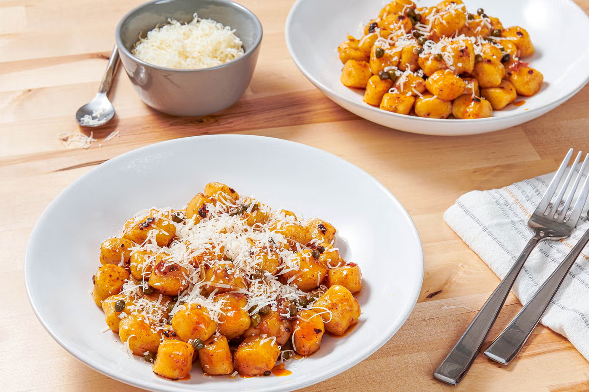

Gnocchi w/ Chilli Crisp, Capers & Parmesan

Description
Serves: 4
Time: 20 min
This five-ingredient recipe, from the British food writer Ruby Tandoh,
comes together in about 20 minutes. Both the parmesan cheese and the
capers are salty, so taste before adding more salt. Tandoh recommends the
Lao Gan Ma brand of chilli crisp, as well as vegan butter and vegan
parmesan cheese for those avoiding dairy. This makes a fine weeknight
dinner or could work as a side pasta as well.
Ingredients
- 900 g potato gnocchi
-
3 tablespoons unsalted butter (may substitute vegan butter, such as
Miyoko brand)
- 3 tablespoons capers in brine, well drained, plus more to taste
- 2 tablespoons chilli crisp
-
56 g grated parmesan cheese (may substitute vegan parmesan cheese)
Steps
-
Bring a large pot of water to a boil. Add the gnocchi and cook according
to the package instructions.
- Reserve ¼ cup (60ml) of the cooking water and drain the gnocchi.
-
In a large frying pan over medium-high heat, melt the butter. Once it's
sizzling, add the capers and chilli crisp, making sure to get spoonfuls
of the crispy chilli flakes (not just the oil on top) and cook, stirring
constantly, for about 30 seconds. Add the gnocchi to the pan, along with
a couple of tbsp of the reserved cooking water, then stir or shake the
pan until the gnocchi are well coated and everything is hot, about 1
minute, adding more water as needed if the pan is dry.
-
Remove from the heat and serve right away, with the parmesan on the
side.